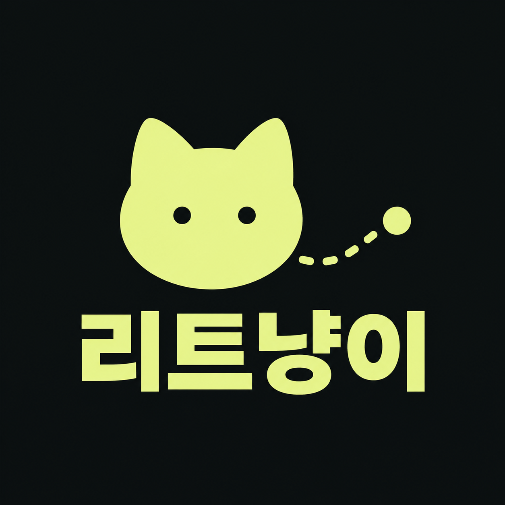

지역별 가상 지도 설계
광진구·송파구·강동구 이름을 붙인 세 가지 가상 지도에 서로 다른 배치와 이동 조건을 설계합니다.
리트냥이는 가상 지도에서 눈에 잘 띄지 않는 길을 찾습니다. 지역마다 다른 지형과 단서를 살펴보고, 숨은 길을 거쳐 출발지에서 출구까지 이어지는 경로를 설계합니다.
솔루션 체험하기
광진구·송파구·강동구 이름을 붙인 세 가지 가상 지도에 서로 다른 배치와 이동 조건을 설계합니다.
보이는 길을 따라가며 물음표로 표시된 단서를 조사하고 숨은 통로를 찾습니다.
찾은 통로가 출발점과 출구를 연결하는지 확인하고, 막히면 이전 칸으로 되돌아갑니다.
지역별 실습 보드에서 통로를 탐색하고, 경로가 출발지에서 출구까지 이어지는지 확인합니다.
도로로 이어진 지점을 누르세요. ? 지점을 거쳐 출구에 도착하면 경로 검증이 완료됩니다. 직전 지점을 누르면 되돌아갑니다.